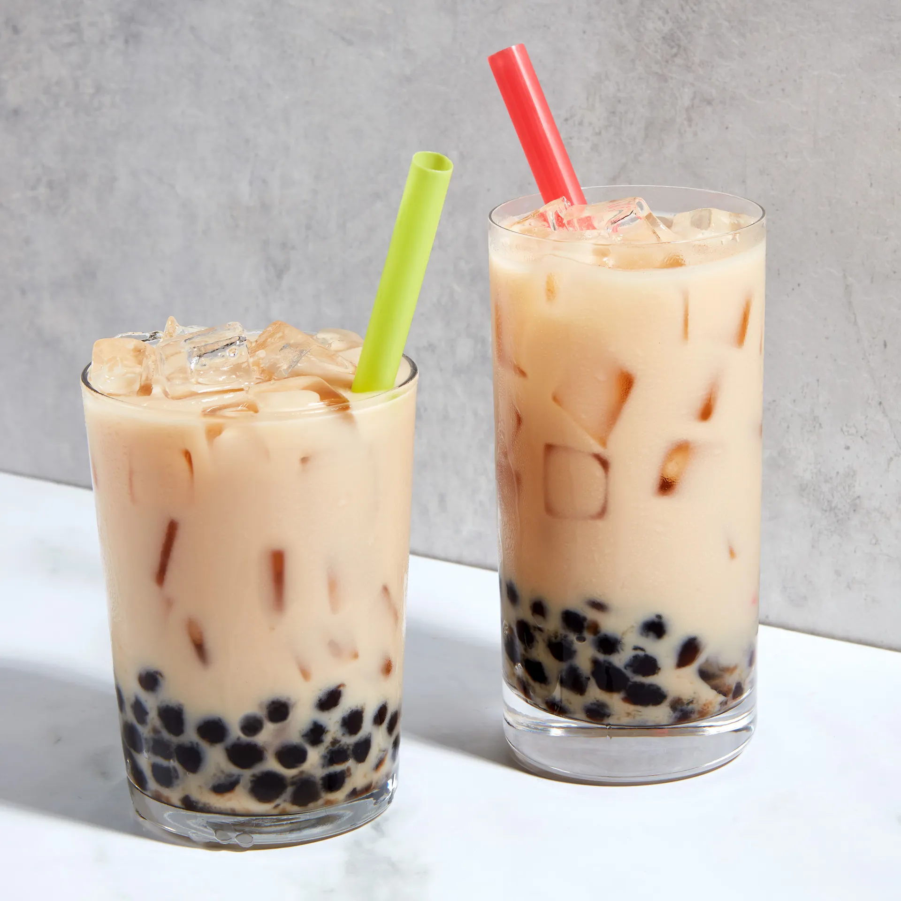

Milktea

The classic combination of sweetened black tea, milk, and tapioca balls is the very definition of bridging cultures with a drink.
However much you tweak your milk tea with different syrups, milks, or teas, you just hear that same beat underneath and you know what it is.
Ingredients
Sweetening Syrup
- 1 cup (213 grams) dark brown sugar, packed
- 1 cup (198 grams) granulated sugar
- 1 cup (227 grams) boiling-hot filtered water
Boba (Tapioca Balls)
- 4 cups filtered water, plus more as needed
- 1 cup (168 grams) dried boba balls
- ½ cup Sweetening Syrup
Brewed Black Tea Blend
- ½ cup (28 grams) loose Assam black tea leaves
- ¼ cup (14 grams) loose Ceylon black tea leaves
- ¼ cup (14 grams) loose Yunnan black tea leaves
- 4 oz. (by weight) ice cubes
- 5 oz. filtered water, heated to 190ºF
To Assemble each drink
- 2-4 Tbsp. toppings of your choice (optional)
- 5 oz. (by weight) ice cubes
- 2 oz. Sweetening Syrup, or to taste
- 1 cup Brewed Black Tea Blend
- 2½ oz. (¼ cup plus 1 Tbsp.) half-and-half or your dairy-free milk of choice
Steps
- Combine the brown and white sugars in a heatproof bowl. Whisk in the hot water until dissolved. Let cool, then pour into a clean, resealable container and refrigerate up to 1 month.
- In a medium saucepan, bring the water to a rolling boil over high heat. Add the boba and cook for 30 minutes, stirring frequently during the first 10 minutes of cooking to prevent the boba from sitting at the bottom of the pot and burning. Cover the pot so the water doesnt evaporate, and stir occasionally for the remainder of the time. Add more hot water if necessary to keep the boba covered.
- After the 30 minutes of cooking, take the pot off the heat and let the boba rest for another 30 minutes.
- After the resting time, strain the boba in a colander or a strainer, discarding the water, and pour them into a mixing bowl. Stir in ½ cup Sweetening Syrup. After an additional 30 minutes (so 1½ hours total from the time you started cooking), the boba should have absorbed the sweetness; it wont get any sweeter if it continues to sit longer.
- Now your boba is ready to serve; hold it warm or at room temperature (our preference). When you add it to drinks, scoop some of the balls out with a little strainer to leave the syrup behind. The boba keeps for about 4 hours before it starts to lose its texture.
- Combine the tea leaves in a mixing bowl; stir well to fully mix. Store in an airtight container.
- Fill a tall glass with the ice cubes. Heat filtered water to 190ºF. Steep 2 tablespoons of the tea leaf blend in 5 oz. of the hot water for 4 minutes. Strain the tea over the ice, and set the glass aside to allow the ice to fully melt.
- Fill a glass with the toppings, if using, and the ice, and then add the syrup. Pour the tea over the ice. Add the half-and-half. Stir until everything is mixed.